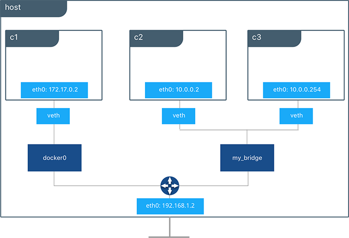

Module Objectives
Introduce Docker networking goals
Understand the Container Network Model
Understand the role of Docker network drivers
Deep dive into bridge & overlay networks
Physical networks
Service discovery
Load balancing
Security
These are the topics we’ll try to touch on in the next n hours. To start - what are the key concerns a service network needs to deliver on? (discuss)
Docker Networking
prioritizes service discovery, load balancing, security, performance, scalability, but most importantly portability .
In some sense, the first 5 are tablestakes for any distributed application; Docker’s special sauce is the last one - portability across and between infrastructure. What abstractions are necessary to achieve network portability in practise? (discuss; lead students to think about network virtualization and container network isolation).
The Container Network Model
at high level, all container networks follow a model consisting of three parts:
- the network sandbox, which on linux machines is exactly a linux network namespace. This is a security feature of container networking that provides independent routing tables and network interfaces to each container. This provides the network isolation we decided we wanted above.
- the endpoint, which provides a channel for traffic to and from the network namespace. In practice, this typically appears as eth0 (etc) inside the contianer, and accepts an external veth connection (veth == virtual ethernet connection, used to route traffic between network namespaces). The endpoint serves to abstract network details away from the application logic, so that different networks can be swapped out easily.
- the network itself, an object whose only contract is to provide connectivity between containers; an example of this that we'll dig into in detail in a moment is a linux bridge.
Network Drivers
Define the behavior of the network in the CNM
Are container agnostic thanks to the endpoint abstraction
Complete list: see the docs, but we will focus on bridge and overlay .
All the fun in the CNM comes from the network drivers. You may have noticed that the contract for networks in the CNM is kind of trivial - anything that connects containers counts. Correspondingly, there's a bunch of different drivers out there, and you can even create your own; today we're going to focus on the two workhorses of docker networking - bridge, and overlay.
The Bridge Network
Birth of a Bridge Net:
docker network create -d bridge my_bridge ...
Engine triggers driver to create a network
Bridge driver instantiates Linux bridge & sets up iptables
docker run --net my_bridge
driver spawns veth
ends of veth plugged into container endpoint and linux bridge
- simplest nontrivial network is the Bridge network
Default Bridge Routing Demo
SSH into any machine with docker installed, and try the following:
host> docker run -it --name c1 busybox sh
c1> ip address # look for eth0; compare MAC to IP
host> sudo apt-get install bridge-utils
host> brctl show
c1> route -n
host> route -n
- start by standing up any old container with no network specifics defined at all
User-Defined Bridge Network Demo
On the same node as before:
host> docker network create -d bridge --subnet 10.0.0.254/16 my_bridge
host> docker run -itd --name c2 --net my_bridge busybox sh
host> docker run -itd --name c3 --net my_bridge --ip 10.0.0.254 busybox sh
host> brctl show
host> docker network ls # compare network ID and bridge name
host> ip link
- start by creating a simple bridge network
User Defined Bridges

Note that bridge networks are firewalled by default.
- here's the setup you built over the last two demos.
External Connectivity
Bridge networks are not exposed on the external network, but containers can be port mapped.
- in addition to firewalling against other networks, bridge networks are not accessible by default from the external network; containers have IPs assigned to them from the bridge's subnet, and that's it.
Exercise: Container Reachability
From container c3 that you created in the demo, try ping c2
Also from c3, try nslookup c2 ; do the results make sense?
Try the same operations to or from c1; discuss with the people sitting near you.
- docker exec c3 ping c2
Multi-Host Networking
Docker Swarm allows the distribution of containers and services across any number of hosts; what are the fundamental requirements for a container on one host to communicate with a container on another host?
Given what we’ve seen so far with firewalled container networks addressed by private, network specific subnets, what would need to happen to successfully communicate in a multi-host setting? (discuss; lead class to thinking about traversing the external network starting from an address in a local subnet (ie vxlan), particularly in the context of linux bridges trying to do level 2 communications). Previously the linux bridge could just bounce L2 packets around as it pleased, but now there's this whole L3 network to traverse.
VXLAN Packet Walk
- We can achieve this via virtual extensible LAN, or VXLAN. VXLAN is an encapsulation standard that takes L2 communications and wraps them in headers that allow their transport over the L3 network, which is exactly what this figure is trying to illustrate.
VXLAN Packet Walk
- In a little more detail, overlay networks share a lot of the plumbing as bridge networks. Containers still have a veth plugging them into a linux bridge; what's new here is the VXLAN Tunnel Endpoint (VTEP) hanging out on each host; these are the devices responsible for doing the wrapping and unwrapping illustrated previously.
Multi-Host Control Plane Gossip Network
All swarm workers participate in a gossip network to update each other's network control planes.
- In order for multi-host networking to function, every host needs to know where every container is in an up to date routing table.
Overlay Network Internal Arch
In addition to the overlay network itself, all hosts participating in a multi-host network have exactly one bridge called docker_gwbridge, for egress traffic.
- everything we've talked about so far happens on this overlay network; but under the hood, there's actually a second bridge per host called `docker_gwbridge`, which facilitates container egress traffic; container-to-container communication is blocked on this bridge
Overlay Network Demo
Try setting up your own overlay network with one container plugged in, and investigate the network structure from inside the container:
host> docker swarm init
host> docker network create -d overlay ovnet
host> docker service create --replicas 1 --network ovnet --name container nginx
host> docker exec -it ip link
- ip link shows the network connections from the perspective of the nginx service; the overlay network is the eth connection with ip 0a.x.y.z, and the gwbridge should be ac.x.y.z.
Physical Networks
Notice the none of the preceeding discussion relied on:
Multicast
External key/value store
Specific routing protocols
Specific network topology
- We've seen bridge and overlay networks; there are more built in network drivers and you can even roll your own, but bridge and overlay are your real workhorses. If you've used Compose before, you've seen a bridge network in action; if you've used Swarm, that was an overlay network under the hood.
Service Discovery
- We've seen Docker network service discovery in action already when we tried pinging one container from another, but this diagram lays it out in a litte more explicit detail.
Exercise: Service Discovery
Set up a configuration of services that matches the diagram; use an `nginx` image for both services. Try installing `host` (apt-get update; apt-get install host) in the `client` container, and doing `host myservice`. Finally, stop the `myservice` service, and restart it with the flag `--endpoint-mode dnsrr`, and query its IP from `client` again.
docker service create --replicas 2 --name myservice --network ovnet nginx
docker service create --replicas 1 --name client --network ovnet nginx
docker exec -it /bin/bash
apt-get update
apt-get install host
host myservice
External Load Balancing: Mesh Nets
#Create a service with two replicas and export port 8000 on the cluster
$ docker service create --name app --replicas 2 --network appnet -p 8000:80 nginx
- We've seen internal load balancing in the last couple of slides; Engine's DNS will return a virtual IP that the per-host IPVS knows how to balance across.
Exercise: External Load Balancing
#Create a service with two replicas and export port 8000 on the cluster
$ docker service create --name app --replicas 2 --network appnet -p 8000:80 nginx
Set up a configuration that matches the diagram. Determine which node isn't running an nginx container, and visit port 8000 at its IP.
docker swarm init / join two nodes
Data Plane Security
docker network create -d overlay --opt encrypted=true
- Control plane communications (gossip syncronization and manager->worker task assignment) is always mutually TLS encrypted, absolutely no setup required; data plane encryption can be optionally turned on with this flag.
Conclusion: Priorities Revisited
Portability : VXLAN, linux kernel networking features, CNM abstractionService Discovery : IPVS, gossip networkLoad Balancing : IPVS, mesh netSecurity : default mutual TLS (control plane); optional IPSec layer (data plane)Performance & Scalability : gossip net w/ topology aware communication; service abstraction
- We started out by discussing our priorities for container networks: portability, service discovery, load balancing, security, performance and scalability.